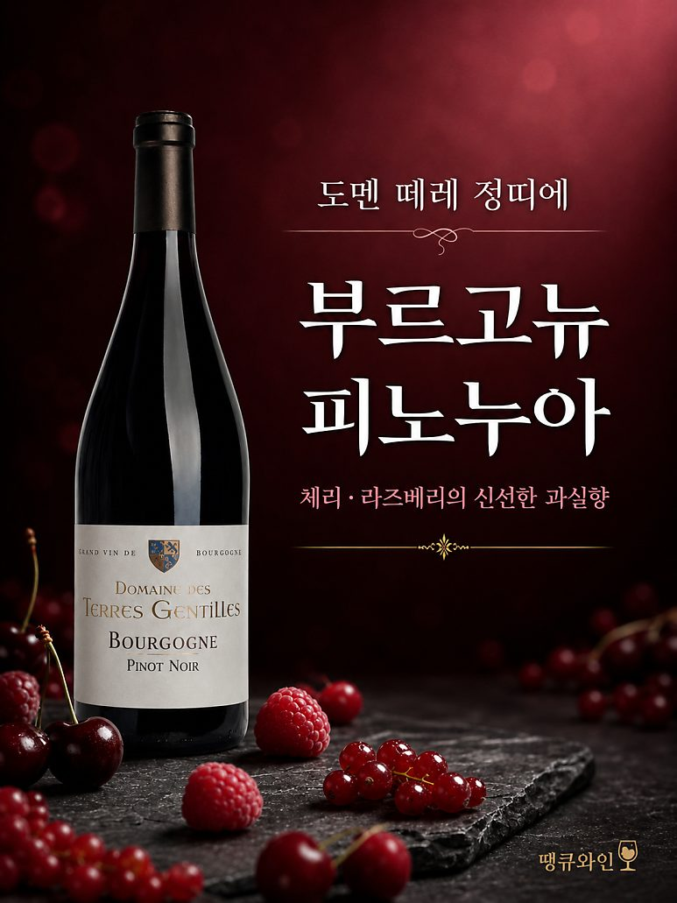
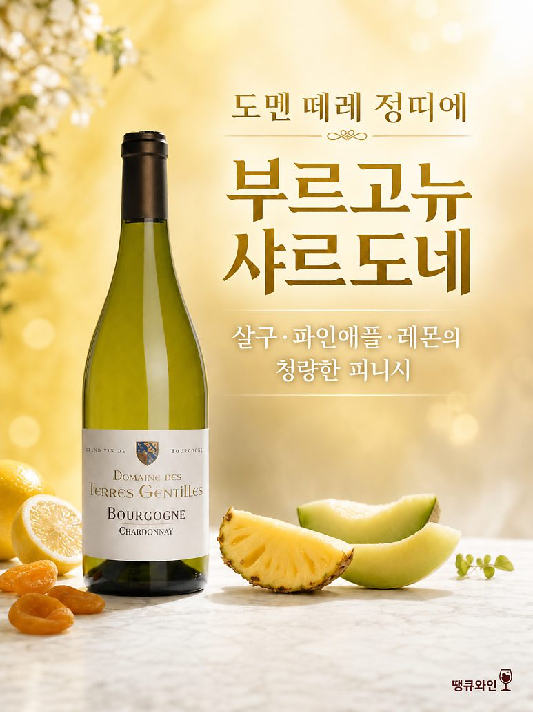

입문용 부르고뉴 추천 도멘 데 테레 정띠에 부르고뉴 레드 & 화이트
도멘 데 테레 정띠에는 부르고뉴 남부 마코네 지역 아제 마을에 자리한 전통 있는 가족 경영 와이너리입니다. 1921년부터 이어져 온 이 도멘은 과거 클뤼니 수도원 소유였던 포도밭을 지속가능한 방식으로 경작하며, 섬세한 과실감과 우아한 균형감이 돋보이는 부르고뉴 와인을 선보이고 있습니다.
마코네의 헤리티지를 담다
도멘 데 테레 정띠에는 부르고뉴 남부 마코네 지역 아제 마을에 자리한 전통 있는 가족 경영 와이너리입니다. 1921년부터 이어져 온 이 도멘은 과거 클뤼니 수도원 소유였던 포도밭을 지속가능한 방식으로 경작하며, 섬세한 과실감과 우아한 균형감이 돋보이는 부르고뉴 와인을 선보이고 있습니다.

PART 1. 도멘 데 테레 정띠에 부르고뉴 피노 누아 (Bourgogne Pinot Noir)
부르고뉴 피노 누아 특유의 맑고 깨끗한 붉은 과실미와 가벼운 질감을 정석적으로 표현해 낸 드라이 레드 와인입니다.
생산지: 프랑스 > 부르고뉴 (Bourgogne)
품종: 피노 누아 (Pinot Noir) 100%
알코올: 12.5% 내외
와인 스타일 지표
당도: ● ○ ○ ○ ○ (잔당감 없이 산뜻하고 정제된 드라이 스타일입니다.)
바디: ● ● ○ ○ ○ (피노 누아 특유의 투명하고 가벼운 라이트 미디엄 바디입니다.)
산도: ● ● ● ○ ○ (입안에 생기를 불어넣는 신선하고 정교한 산미를 지녔습니다.)
타닌: ● ● ○ ○ ○ (실크처럼 매끄럽고 유연하여 목 넘김이 매우 부드럽습니다.)
테이스팅 노트
맑고 투명한 루비 빛깔 사이로 라즈베리, 레드커런트, 산딸기 같은 싱그러운 붉은 과실 향이 화사하게 피어오릅니다. 시간이 지나면서 은은한 야생화의 플로럴한 뉘앙스와 부르고뉴 특유의 편안한 흙 내음이 복합미를 더합니다. 입안에서는 과한 무게감이나 텁텁함 없이 과즙 본연의 맛이 가볍고 정교하게 이어지며, 깔끔하고 산뜻한 피니시로 부담 없는 음용성을 자랑합니다.
추천 페어링: 닭고기나 오리 등 가금류 요리, 부드러운 안심 찹스테이크, 또는 마일드한 연성 치즈

PART 2. 도멘 데 테레 정띠에 마콩 아제 샤르도네 (Mâcon-Azé Chardonnay)
와이너리가 위치한 아제(Azé) 마을의 테루아를 고스란히 담아낸 화이트 와인으로, 샤르도네 특유의 신선함과 마코네 산지 본연의 우아한 미네랄리티가 돋보입니다.
생산지: 프랑스 > 부르고뉴 > 마코네 > 마콩 아제 (Mâcon-Azé)
품종: 샤르도네 (Chardonnay) 100%
알코올: 13.0% 내외
와인 스타일 지표
당도: ● ○ ○ ○ ○ (깔끔하게 떨어지는 깔끔한 드라이 화이트입니다.)
바디: ● ● ● ○ ○ (적당한 볼륨감과 리치함을 갖춘 미디엄 바디입니다.)
산도: ● ● ● ● ○ (침샘을 자극하는 생동감 있고 시원한 산미를 자랑합니다.)
테이스팅 노트
은은한 황금빛이 감도는 맑고 투명한 컬러를 띱니다. 레몬, 라임, 청사과의 싱그러운 시트러스 아로마와 함께 잘 익은 백도, 그리고 하얀 꽃의 화사한 향이 겹겹이 뿜어져 나옵니다. 입안에서는 마코네 지역 특유의 부드러운 질감과 함께 정교한 미네랄리티가 단단한 뼈대를 이룹니다. 과실 고유의 청량한 산미가 끝까지 이어지며 지루할 틈 없는 깔끔한 마무리를 선사합니다.
추천 페어링: 신선한 해산물 샐러드, 생선회나 초밥, 오일 파스타 또는 가벼운 치킨 요리
PART 3. 큐레이션 포인트: 클래식 부르고뉴의 편안한 제안
도멘 데 테레 정띠에 시리즈는 지나치게 무겁거나 난해하지 않고, 부르고뉴 와인이 가진 정체성을 가장 직관적이고 깨끗하게 풀어낸 와인입니다. 수도원 가문에서 이어져 온 100년의 헤리티지를 바탕으로 포도 고유의 풍미를 정직하게 살려내어, 일상 속에서나 좋은 사람들과 함께하는 자리에 편안하게 매칭하기 좋은 훌륭한 선택지가 되어줍니다.
010-8078-7493 문자 주시면 가장 빠르게 안내해 드립니다.
이 글은 땡큐와인 네이버 블로그에 먼저 올린 글이에요.